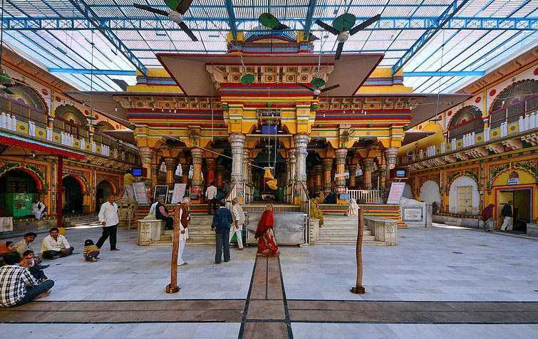

Discover the Beauty of Dwarikadhish Temple
Dwarikadhish Temple, also known as Jagat Mandir, is a famous Hindu temple located in the holy city of Mathura. The temple is dedicated to Lord Krishna, who is considered the king of Dwarka. The temple is made of red sandstone and marble, and is adorned with intricate carvings and sculptures depicting scenes from Hindu mythology. The temple complex also includes a market, a garden, and a museum. Dwarikadhish Temple is a must-visit attraction for anyone visiting Mathura and its surrounding areas.
Visitor Information
- Opening Hours: 6:00 AM to 12:00 PM, 4:00 PM to 8:30 PM
- Entry Fee: Free
- Dress Code: Decent attire (No short dresses or sleeveless shirts)
- Photography: Allowed inside the temple complex
- Best Time to Visit: Early morning or evening to avoid the crowd
How to Reach
Dwarikadhish Temple is located in Mathura. You can reach the temple by taxi, auto-rickshaw, or bus. The temple is about 2 km from the Mathura bus stand, and there are frequent buses and auto-rickshaws available from the bus stand to the temple. Alternatively, you can also take a shared auto-rickshaw or hire a private taxi from Mathura to reach Dwarikadhish Temple.